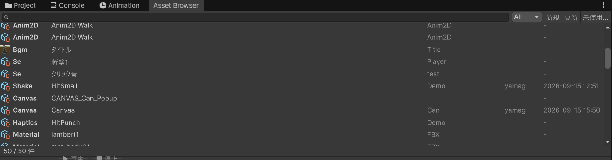

最終更新日: 2026-09-19
このマニュアルは、D-Drive（Designer-Driven Re: IDE Visual Environment、このプロジェクトのアセット管理システム）をデザイナーが使うためのガイドです。プログラムの知識は必要ありません。
ゲームで使う音・エフェクトなどの素材を、「ID（番号札）」で管理する仕組みです。現在は効果音・BGM・エフェクト（VFX）・出す位置（Anchor / 配置セット）・モデル・3D アニメーション・2D アニメーション（スプライト）・マテリアル / テクスチャ・Prefab（ゲーム中に出す物）・Canvas（UI 画面）・UI の動き（UI Tween）・ボタン / スライダーの見た目（Skin）・演出（Presentation）・画面の揺れ / コントローラーの振動に対応しています。
Assets/GameData/Icons/<種別>/ に自動で保存され、Inspector に加えて Asset Browser の一覧行・Project ウィンドウのサムネイル（グリッド表示）にも同じ画像が出ます（2026-09-14 から。未設定のアセットは Unity 既定のサムネイルのままです）。
効果音の登録から確認までを、所要時間の目安つきで一巡する。初めての人はこちらから。
すべての入口になるウィンドウ。素材の一覧・検索・新規作成はここから。まず最初に読んでください。
設定ミス・登録漏れをまとめて見つけて、「修正」ボタンで直す。赤い表示が出たらまずここ。
効果音データの全パラメータの説明。音量・ピッチ・3D設定・連打防止など。
BGMデータの全パラメータの説明。イントロ→ループ構成・フェードなど。
波形を見ながらの音の切り出し（トリミング）、試聴、3Dサウンドの確認。
滝や焚き火などの「その場所で鳴り続ける音」の配置方法。
エフェクトデータの全パラメータの説明。寿命・描画・出す位置（Anchor）・公開パラメータ。
シーンの中で再生しながら位置・色を調整。Prefab の中で ParticleSystem を編集しながらの確認も。
エフェクト・効果音を「どこに・いつ・どう出すか」をデータにして使い回す。ボーン基準、ランダム、ディレイ、入れ子。
格子・円・一列・ランダムのパターンで点を並べ、全点にエフェクト / 効果音をまとめて出す。特定の点だけ変える、入れ子も。
キャラクター / 物体の Prefab を登録し、確認用シーンで回して見る。マテリアルのスロット、出した瞬間に再生するアニメーション。
モデルを動かしながら「何フレーム目で音・エフェクト」を決める。Animator のステートから選んで作る、音の波形を見ながら調整、一時停止、繰り返し設定、ブレンド確認。
スプライトシートを切り分けてコマアニメにする。自動検出、8 方向、コマ間隔の調整（リタイミング）。音・エフェクトは Anim Editor と共通。
色・凹凸・金属感・発光などの「表面の質感」と画像の管理。ファイル名のルールで自動設定、Maya / Substance からの受け渡し。
球や板に貼って回しながら確認、2 つを見比べる、シーンに置く、シェーダーの乗り換え。
弾・ギミック・拾い物などを ID で登録。使い回し（プール）の設定、出現時の音・エフェクト。
メニューやダイアログ 1 画面分の設定。レイヤー、開閉の演出、ボタンを押したら何が起きるか（配線）、パッドのフォーカス移動。
フォーカスのつながりを線で描く、要素ごとの出現 / 常時 / 消滅演出、パッド操作のシミュレーション。
通常・ホバー・押下・無効などの状態ごとの色・大きさ・音。スライダーの応答曲線と目盛り（ノッチ）。
フェード・スライド・跳ねるなどの動きを作る、59 種類のプリセットから選んで当てる、音量などの標準オプションと直結。
「剣攻撃」のようにアニメ・SE・VFX・カメラ揺れなどをまとめて 1 つの演出にする機能。専用の Presentation Editor でタイムライン編集 + 統合プレビューができます。
画面をガクガク揺らす（カメラシェイク）・パッドをブルブル振動させる（ハプティクス）データの作り方。専用の Shake / Haptics Editor で波形を見ながら調整・実際に揺らして/振動させて確認できます。
Maya のカメラ・キャラの動きを Unity の Timeline に取り込むための、Maya 側の書き出し手順とファイル名のルール。スクリプト不要。FBX を置くだけでカットシーンのデータと Timeline が自動で作られ、Unity の Timeline ウィンドウで効果音・エフェクト・画面揺れを足せます（2026-09-18 に取り込み機能を実装、使い方は 2026-09-19 に追記）。
企画がブラウザの発注ツールに登録した発注を D-Drive の空データに変換する。発注者・受注者・状態（発注済→納品済→インポート済）の反映、調整値のコード連携、パラメータ一覧の送信も。
D-Drive を新しいプロジェクトへ持ち込むときのセットアップウィザードの使い方（骨子。詳しい手順は今後追記予定）。
「アセット」「ピッチ」「Mixer」「Skin」「Tween」など、分からない言葉が出てきたらここ。
Tools > D-Drive > Asset Browser を開くこれだけで登録完了です。所要時間の目安つきでもう少し丁寧に一巡したい場合は はじめての15分（新規メンバー向け） へ。詳しくは Asset Browser の使い方 へ。エフェクトを「どこに出すか」を決める練習は Anchor（出す位置）の作り方 の「はじめの一歩」へ。

各ページの見出しの下に「最終更新日」を入れました（2026-09-19 追加）。マニュアル全体の最終更新は 2026-09-19 です。
| 日付 | 更新内容 |
|---|---|
| 2026-09-19 |
|
Tools > D-Drive の下にすべてまとまっています。専用エディタは Editors、一括処理は Generate、自動チェックは Validation